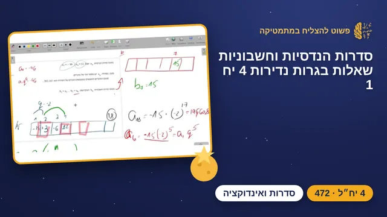
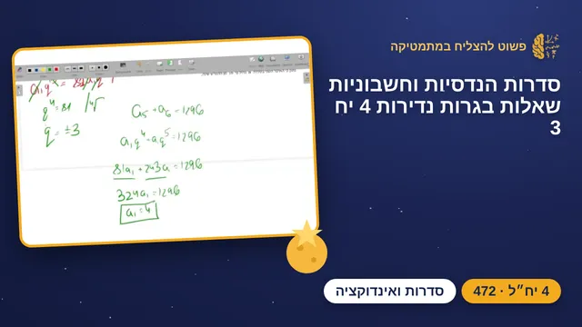
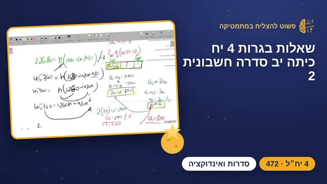
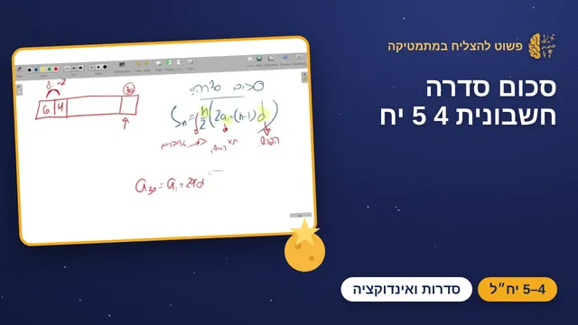
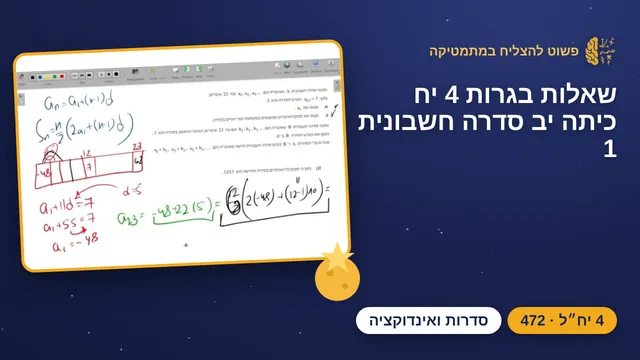
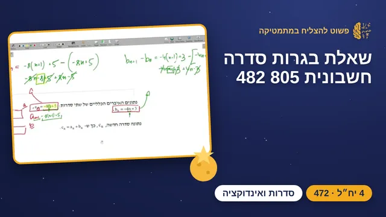
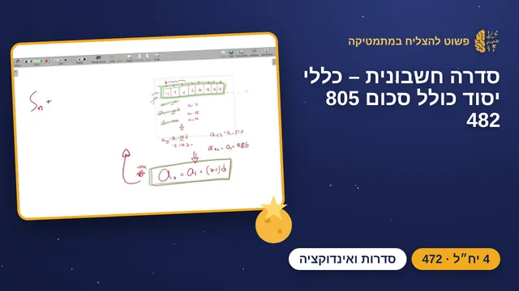
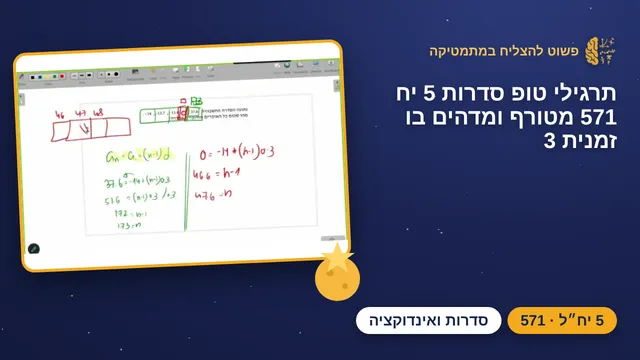

פשוט להצליח במתמטיקה › כל הנושאים › סדרות ואינדוקציה
סדרות ואינדוקציה – סרטוני הסבר ותרגול
38 סרטוני הסבר ותרגול בנושא סדרות ואינדוקציה – לשאלון 471, שאלון 472, שאלון 571. כל נושא מוסבר מהקל אל הקשה: קודם הרעיון, אחר כך תרגילים, ובסוף שאלות בסגנון בגרות. הכול בחינם, בשיטת "פשוט להצליח".
רוצים לעקוב אחרי ההתקדמות?נרשמים בחינם, וכל סרטון שראיתם מסומן ✓. ממשיכים מכל מכשיר.
הצטרפות בחינם ←סדרות ואינדוקציה – שאלון 471 כל הנושאים של שאלון 471 ←
סדרות ואינדוקציה – שאלון 472 כל הנושאים של שאלון 472 ←
 סדרה הנדסית – 4 מספרים: מכפלה וסכום
סדרה הנדסית – 4 מספרים: מכפלה וסכום סדרה הנדסית – הפרש בין איברים, מציאת המנה
סדרה הנדסית – הפרש בין איברים, מציאת המנה
סדרות הנדסיות וחשבוניות שאלות בגרות נדירות 4 יח 1 סדרות הנדסיות וחשבוניות שאלות בגרות נדירות 4 יח 2
סדרות הנדסיות וחשבוניות שאלות בגרות נדירות 4 יח 2
סדרות הנדסיות וחשבוניות שאלות בגרות נדירות 4 יח 3
שאלות בגרות 4 יח כיתה יב סדרה חשבונית 2 איך מוכיחים סדרה חשבונית
איך מוכיחים סדרה חשבונית
סכום סדרה חשבונית 4 5 יח
שאלות בגרות 4 יח כיתה יב סדרה חשבונית 1 הסבר סדרה חשבונית – מהות ונשמה 4 5 יח
הסבר סדרה חשבונית – מהות ונשמה 4 5 יח
שאלת בגרות סדרה חשבונית 805 482
סדרה חשבונית – כללי יסוד כולל סכום 805 482 סדרה חשבונית וסדרה הנדסית – שאלת בגרות ל-4 ו-5 יחסדרה חשבונית ל-4 ו-5 יח – שאלת בגרות קטלניתסדרות 482 שאלת בגרות מדהימה
סדרה חשבונית וסדרה הנדסית – שאלת בגרות ל-4 ו-5 יחסדרה חשבונית ל-4 ו-5 יח – שאלת בגרות קטלניתסדרות 482 שאלת בגרות מדהימהסדרות ואינדוקציה – שאלון 571 כל הנושאים של שאלון 571 ←
 סדרה הנדסית 581סדרה הנדסית – 4 מספרים: מכפלה וסכוםסדרה הנדסית – הפרש בין איברים, מציאת המנה
סדרה הנדסית 581סדרה הנדסית – 4 מספרים: מכפלה וסכוםסדרה הנדסית – הפרש בין איברים, מציאת המנה סדרה חשבונית – a7=−a17, איבר שווה 0 וסכום
סדרה חשבונית – a7=−a17, איבר שווה 0 וסכום סדרות 5 יח 571 מטורפת
סדרות 5 יח 571 מטורפת תרגילי טופ סדרות 5 יח 571 מטורף ומדהים בו זמנית 2
תרגילי טופ סדרות 5 יח 571 מטורף ומדהים בו זמנית 2
תרגילי טופ סדרות 5 יח 571 מטורף ומדהים בו זמנית 3 תרגילי טופ סדרות 5 יח 571 מטורף ומדהים בו זמנית 1
תרגילי טופ סדרות 5 יח 571 מטורף ומדהים בו זמנית 1 הסבר מהות סדרה חשבונית כולל הנוסחאות 5 יח
הסבר מהות סדרה חשבונית כולל הנוסחאות 5 יח אינדוקציה 5 יח 571
אינדוקציה 5 יח 571 סדרות הנדסית מטורפת 571 GOOL
סדרות הנדסית מטורפת 571 GOOL סדרה נדירה של 5 יח תהנו
סדרה נדירה של 5 יח תהנו אינדוקציה 571 שאלת בגרות
אינדוקציה 571 שאלת בגרות הנדסית 5 יח בגרות
הנדסית 5 יח בגרות תרגיל 45 סדרה הנדסית כיתה יא 5 יח
תרגיל 45 סדרה הנדסית כיתה יא 5 יח הוכחות סדרה הנדסית 5 יחאיך מוכיחים סדרה חשבוניתסכום סדרה חשבונית 4 5 יחהסבר סדרה חשבונית – מהות ונשמה 4 5 יח
הוכחות סדרה הנדסית 5 יחאיך מוכיחים סדרה חשבוניתסכום סדרה חשבונית 4 5 יחהסבר סדרה חשבונית – מהות ונשמה 4 5 יח סדרה הנדסית שאלה מקסימה יא 5 יחהוכחה סדרה הנדסית הטופ של הטופ 5 יח 2
סדרה הנדסית שאלה מקסימה יא 5 יחהוכחה סדרה הנדסית הטופ של הטופ 5 יח 2 הוכחה סדרה הנדסית הטופ של הטופ 5 יח 1
הוכחה סדרה הנדסית הטופ של הטופ 5 יח 1 סדרות הנדסיות שאלת בגרות 581 קיץ 2025
סדרות הנדסיות שאלת בגרות 581 קיץ 2025 שאלות קצרות 5 יח שאלון 571 – סכום סדרה הנדסית מתכנסת עם פונקציית טריגוסדרה חשבונית וסדרה הנדסית – שאלת בגרות ל-4 ו-5 יחסדרה חשבונית ל-4 ו-5 יח – שאלת בגרות קטלניתסדרות חורף 2024 581 – שאלת בגרות פתורה 5 יחסדרות שאלת בגרות 581
שאלות קצרות 5 יח שאלון 571 – סכום סדרה הנדסית מתכנסת עם פונקציית טריגוסדרה חשבונית וסדרה הנדסית – שאלת בגרות ל-4 ו-5 יחסדרה חשבונית ל-4 ו-5 יח – שאלת בגרות קטלניתסדרות חורף 2024 581 – שאלת בגרות פתורה 5 יחסדרות שאלת בגרות 581 סדרה הנדסית – תרגיל 39 עמ' 230 (יואל גבע חלק ג) 5 יחאינדוקציה · סרטון קצר
סדרה הנדסית – תרגיל 39 עמ' 230 (יואל גבע חלק ג) 5 יחאינדוקציה · סרטון קצר